テーブル型
GRID · 同じ項目を複数件記録する表
テーブル型フィールドとは
- 1.1フィールドの追加と属性パネルの構成
1.1フィールドの追加と属性パネルの構成
概要
テーブル型(GRID) は、同じ項目を複数件記録する表です。併用薬のように何件になるか事前に分からない資料に使用します。他のタイプとの最大の違いは作成の順序です — まず表のカラム(列)を定義し3章、行は記録者が入力画面で直接追加します。カラムを定義するまで、このフィールドは何も受け付けることができません。
画面説明
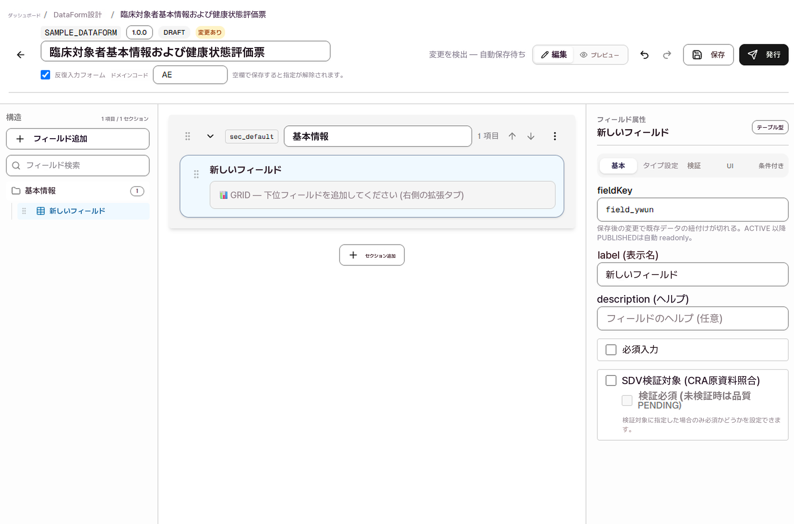
[+ フィールド追加] — ここでタイプを指定するとフィールドが作成されます。
構造ツリーに新しいフィールドが追加されます。アイコンは表の形です。
WYSIWYG キャンバスには、表の代わりに案内だけが表示されます — 「GRID — 下位フィールドを追加してください (右側の拡張タブ)」。カラムが 0 個だからです。3.1
fieldKey — 表全体が保存されるキーです。カラムごとに別々に作られるのではなく、表一つにキー一つです。2.1
label (表示名) · description (ヘルプ) — 表の上下に表示される名前と補足説明です。2.1
必須入力 — 2.2 で扱います。⚠ カラムの必須とは別の軸です。
SDV検証対象 — 2.3 で扱います。
タイプバッジ「テーブル型」 — 選択したフィールドのタイプです。追加した後は変更できません。
属性タブ 5種 — 基本 · タイプ設定 · 検証 · UI · 条件付き。このマニュアルの2~6章が各タブに対応します。
SDV の下が空いています。他のタイプにあるAE意味ロールと未測定宣言を許可は、テーブル型では項目そのものが表示されません — 表は値が複数件あるため、その二つの機能が成り立たないからです。7.2
注意事項
必須確認 データ破損 · フォーム完了不可
- • ⛔ カラムを定義しないと、このフィールドは何の役にも立ちません。キャンバスに表が表示されないのがその状態です — 必ずタイプ設定タブで先にカラムを作成してください。3章
- • タイプは追加した後に変更できず、発行(PUBLISH)後は構造そのものを変更できません。誤って選択した場合は、フィールドを削除して再度追加してください。
誤解しやすい動作
- • 行数は作成者が決めません。記録者が入力画面で [行追加] によって必要な数だけ増やします。最小 · 最大行数を指定する項目は提供されていません。7.2
- • 表の中にさらに表を入れることはできません。カラムとして使えるタイプは、一つのセルに収まる 9 種だけです。3.2
基本タブ — 名前 · 必須 · 検証対象
- 2.1fieldKey · 表示名 · ヘルプ
- 2.2必須入力
- 2.3SDV検証対象 (CRA原資料照合)
2.1fieldKey · 表示名 · ヘルプ
概要
フィールドの名前を決める領域です。保存キー(fieldKey)と画面に表示される名前(label)は互いに別の値で、変更してよいタイミングが異なります。表には何を何件でも記入する欄なのかが分かる必要があるため、表示名は具体的に記入してください。
画面説明
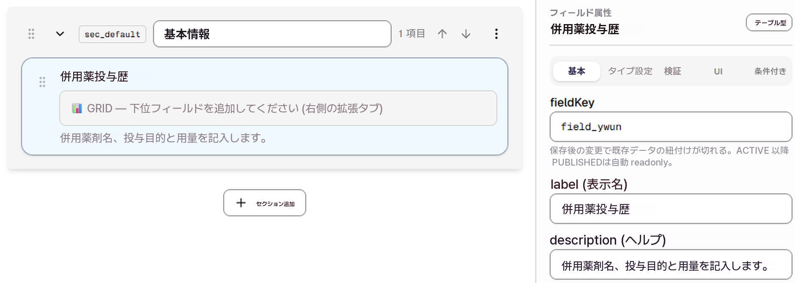
label (表示名) — 表の上に表示するタイトルを入力します。キャプチャでは 併用薬投与歴 です。
キャンバスの表タイトルとして表示されます。カラム名とは別の階層です — カラム名はタイプ設定タブで別に決めます。3.3
description (ヘルプ) — 表の下に表示する補足説明を入力します。空欄にすると表示されません。
表の下にグレーの文字で表示されます。キャプチャでは「併用薬剤名、投与目的と用量を記入します。」です。
fieldKey — 表全体が保存されるキーです。フィールドを追加すると field_ywun のように自動で付与され、画面の案内のとおり「保存後の変更で既存データの紐付けが切れる」です。
注意事項
必須確認 データ破損 · フォーム完了不可
- • 何を集める表なのかを表示名で明示してください。「投与歴」だけでは治験薬なのか併用薬なのか分からず、同じ表に性質の異なる記録が混ざります。
- • 一件もないときにどうするかをヘルプに記入してください。表には「なし」を示す欄が別にありません — 空の表とまだ尋ねていない表が同じに見えます。「該当なし」カラムを置く、または前にはい/いいえの質問を置くなどの方法で、作成者が設計する必要があります。6章
- • fieldKey は保存した後に変更しないでください。すでに入力されたデータとの紐付けが切れ、このフィールドを参照していた検証規則4.3と条件付き表示6章も一緒に壊れます。
誤解しやすい動作
- • 表示名(label)はいつでも変更できます。保存された値には影響しません。
2.2必須入力
概要
この表を必ず埋めないとフォームを完了できないようにするかを決めます。テーブル型には必須が二つの階層で存在します — ここの表全体の必須と、タイプ設定タブのカラム別の必須3.3です。二つはそれぞれ別に効力があり、カラム側のほうが強く作用します。
画面説明
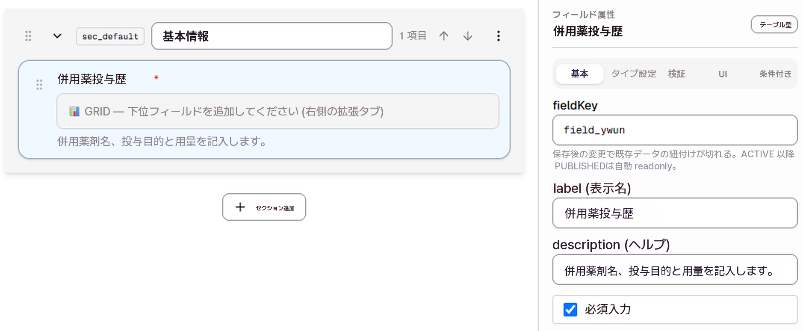
* が表示される必須入力 — 選択すると、この表が必須項目になります。行が一件もない場合、フォームを完了できません。
キャンバスの表タイトルの右に赤い * が表示されます。表示はタイトルの横に一つだけ付きます — カラムごとに付く星は 3.3 で別に決めます。
label · description — 2.1 で入力した値がそのまま表示されます。
注意事項
必須確認 データ破損 · フォーム完了不可
- • ⛔ カラムに必須が一つでもあれば、このチェックを外しても表を埋める必要があります。システムは必須カラムを持つ表を自動で完了集計の対象に入れます — 表全体の必須を解除したからといって、スキップできるようにはなりません。3.3
- • ⛔ 行を追加したまま空にしておくと完了しません。システムは行ごとに必須カラムが埋まっているかまで確認します。空の行が一つでも残っていれば、その表は未完了です — 使わない行は削除してください。3.3
- • 「該当なし」を表す手段がありません。未測定宣言を有効にできないタイプなので、必須に指定する前に、併用薬がない被験者をどう記録するかを先に決めてください。通常は前にはい/いいえの質問を置き、条件付き表示でまとめます。6章 · 7.2
誤解しやすい動作
- • 非表示のフィールドは必須チェックから除外されます。条件付き表示6章で隠されている間は、必須であっても空のままフォームが完了します。
2.3SDV検証対象 (CRA原資料照合)
概要
SDV(Source Data Verification) は、臨床開発モニター(CRA)が入力値を医療機関の原資料と照合する手順です。このフィールドをその対象に指定するかどうかを、ここで決めます。この設定はすべてのフィールドタイプで共通なので、画面もタイプに関係なく同じです。
画面説明


SDV検証対象 (CRA原資料照合) — 選択すると、このフィールドが CRA の照合リストに含まれます。指定の単位は表全体で、カラムごとに別に指定することはできません。
選択状態に変わると、下位項目が有効になります。
検証必須 (未検証時は品質 PENDING) — ①を選択した後でなければ指定できません。選択すると、CRA が照合を終えるまで、そのデータの品質ステータスが PENDING のままになります。
①を選択する前は、②が薄く表示されて無効です。画面の案内のとおり「検証対象に指定した場合のみ必須かどうかを設定できます。」
注意事項
必須確認 データ破損 · フォーム完了不可
- • ⛔ 表で最も重要な照合項目は「抜けている行」です。記入されている行が正しいかよりも、原資料にあるのに表にない投与記録のほうが危険です — システムには抜けている行を知る方法がないため、全面的に CRA の照合に依存します。
- • ⛔ 行が増えるほど照合の負担が大きくなります。カラムを過度に増やす前に、本当に照合できる項目かどうかを確認してください。3.3
誤解しやすい動作
- • 値が変更されると検証が解除されます。一つの行のセル一つだけを直しても、表全体の品質ステータスが PENDING に戻り、CRA が再度照合する必要があります。
参考
- • 品質ステータスは PENDING → VERIFIED → CLEAN の順に進みます。検証必須に指定したフィールドが一つでも未検証であれば、そのデータは CLEAN になりません。
タイプ設定タブ — カラム定義 (このタイプの中心)
- 3.1カラムがない初期状態
- 3.2カラム追加
- 3.3カラム設定 — 表の完成
3.1カラムがない初期状態
概要
テーブル型で最も重要なタブです。他のタイプのタイプ設定タブには長さ · 範囲 · デフォルト値のような項目がありますが、テーブル型にはカラム定義一つだけです。表が何を受け付ける表なのかを、ここですべて決めるからです。
画面説明
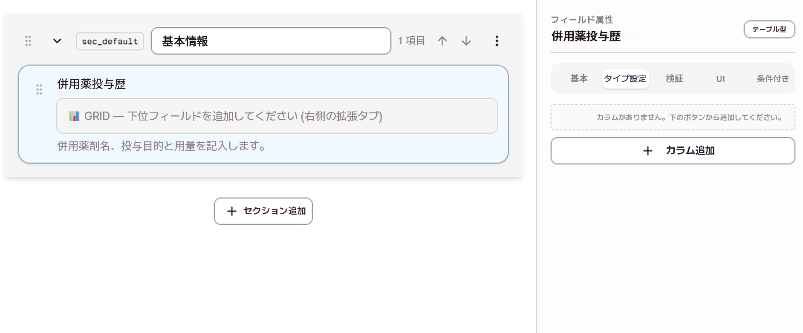
[+ カラム追加] — 最初のカラムを作成します。選択した後の画面は 3.2 で説明します。
カラムがない場合は、「カラムがありません。下のボタンから追加してください。」という案内が表示されます。
同じ状態がキャンバスにも表れます — 「GRID — 下位フィールドを追加してください (右側の拡張タブ)」。表はまだ描画されません。
タイプバッジ「テーブル型」 — 設定中のフィールドのタイプです。
属性タブ — 現在はタイプ設定タブです。
注意事項
必須確認 データ破損 · フォーム完了不可
- • ⛔ カラムを作成する前は、保存する値がありません。この状態で発行すると、記録者は何も入力できない案内文だけを見ることになります。1.1
誤解しやすい動作
- • デフォルト値(defaultValue)の項目がありません。表は値が複数件あるため、事前に埋めておく手段が提供されていません — 単一行テキスト · 数値などとの違いです。7.2
- • 自動計算(calculation)の項目もありません。表全体を一つの数値として算出することは成り立ちません。合計が必要な場合は、別の数値フィールドを設けてください。7.2
- • 最小 · 最大行数を指定する項目はありません。行数を制限する必要がある場合は、ヘルプで案内し、SDV の段階で確認してください。2.1 · 2.3
3.2カラム追加
概要
カラムを一つ追加すると、その瞬間にキャンバスに表が現れます。カラム一つが表の列一つで、各カラムはそれぞれ自分の名前 · 保存キー · 入力方式を持ちます。つまり、カラム一つ一つが小さなフィールドだと考えてください。
画面説明
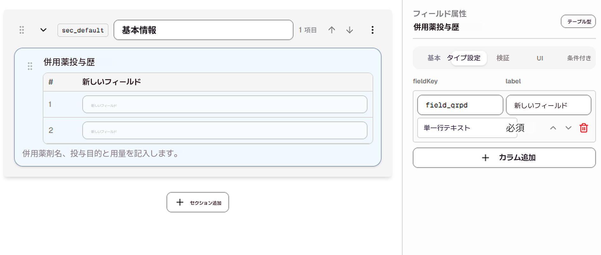
[+ カラム追加] — カラムをもう一つ作成します。選択した数だけ列が増えます。
キャンバスに表が描画されます。⚠ 行が2 行表示されているのはプレビュー用の例です — 実際の入力画面は1 行から始まり、記録者が [行追加] で増やします。1.1
fieldKey — そのカラムの値が保存されるキーです。field_qrpd のように自動で付与され、表の中でのみ使われます。
label — カラム名です。最初は 新しいフィールド です。
表のヘッダーとして表示されます。入力画面ではセル内の案内文としても同じ値が使われます。5.4
タイプ — そのカラムの入力方式です。最初は単一行テキストです。9 種から選べます — 単一行テキスト · 数値 · 日付 · 日時 · 真/偽 · 単一選択 · 複数選択 · 電話番号 · メール。
必須 — そのカラムを必ず埋める必要があるかを決めます。2.2 · 3.3
順序移動(∧ ∨)と削除 — カラムの左右の順序を変更したり、削除したりします。
注意事項
必須確認 データ破損 · フォーム完了不可
- • ⛔ キャンバスの 2 行を行数の設定と誤解しないでください。作成画面の表は形を示す例にすぎず、行数は記録者が決めます。1.1
- • ⛔ 複数行テキスト · ファイルアップロード · 住所 · 尺度はカラムになれません。一つのセルに収まらないタイプなので一覧から除外されています — そのような項目が必要な場合は、表の外に別のフィールドとして設けてください。1.1
誤解しやすい動作
- • カラムの fieldKey は表の中でのみ有効です。他のフィールドの検証規則4.3や条件付き表示6章で、カラムを直接参照することはできません。7.2
参考
- • カラムの順序がそのまま表の列の順序です。記録者が読む順に配置してください — 後から ∧ ∨ で変更できます。
3.3カラム設定 — 表の完成
概要
カラムごとに保存キー · 名前 · 入力方式 · 必須かどうかの四つを決めます。キャプチャは薬剤名 · 投与目的 · 1回投与量の三つのカラムで「併用薬投与歴」表を完成させた状態です。薬剤名と1回投与量だけが必須で、投与目的は任意です。
画面説明
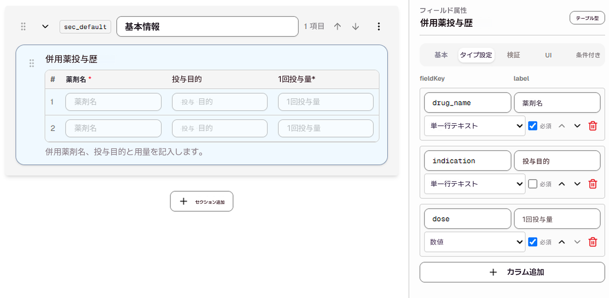
* が付くfieldKey — 自動付与されたキーを drug_name のように意味が分かる名前に変更すると、抽出データが読みやすくなります。
label — カラム名です。キャプチャでは 薬剤名 です。
表のヘッダーがその名前に変わります。
タイプ — キャプチャの三つのカラムは単一行テキスト · 単一行テキスト · 数値です。1回投与量は数値の比較と集計を行う必要があるため、数値にしました。
必須 — キャプチャでは薬剤名と1回投与量だけを選択しました。
必須に指定したカラムのヘッダーの横に赤い * が付きます。投与目的には付いていません。
2 番目のカラム — indication / 投与目的 / 単一行テキスト / 必須ではない。
3 番目のカラム — dose / 1回投与量 / 数値 / 必須。
[+ カラム追加] — カラムをさらに増やします。
# 列は行番号です。システムが自動で付けるもので、作成の対象ではありません。
注意事項
必須確認 データ破損 · フォーム完了不可
- • ⛔ カラムの必須は表全体の必須より強く作用します。必須カラムが一つでもあれば、基本タブの「必須入力」をオフにしてもその表は完了集計の対象になり、行ごとにその欄が埋まっているかまでチェックします。2.2
- • ⛔ fieldKey は発行前に確定してください。保存した後に変更すると、すでに入力されたその列の値だけ紐付けが切れます — 表は残り一列だけが空になる形なので、気付きにくくなります。2.1
- • 数値は必ず数値タイプにしてください。単一行テキストで受け付けると、
500mgのように単位が混ざって入力され、集計も比較もできません。単位はカラム名に入れてください(例:1回投与量(mg))。
誤解しやすい動作
- • 選択型のカラムを使うと表記が統一されます。投与目的のように選択肢が決まっている項目は、単一選択にすると、同じ意味を異なる表記で書くことが減ります。3.2
検証タブ — 保存前の値チェック
- 4.1検証規則がない状態
- 4.2規則の追加
- 4.3規則作成完了 — 他フィールドと比較
4.1検証規則がない状態
概要
保存する前に値が条件に合っているかをチェックする規則をまとめておくタブです。テーブル型では、このタブは使える範囲が非常に狭くなります — 表の値は行が複数件ある束なので、長さ · 範囲のようなチェックが成り立たないからです。セル一つ一つをチェックする規則はこのタブにありません。4.2
画面説明
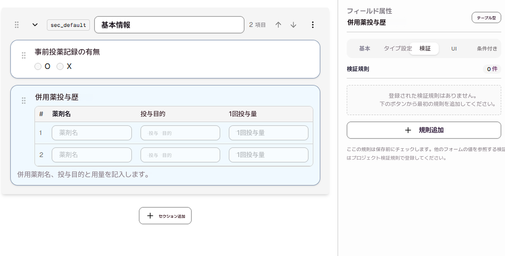
[+ 規則追加] — 最初の規則を作成します。選択した後の画面は 4.2 で説明します。
検証規則領域と、登録された規則数です。最初は 0 件 です。
規則がない場合は、「登録された検証規則はありません。下のボタンから最初の規則を追加してください。」という案内が表示されます。
下部の案内 — 「ここの規則は保存前にチェックします。他のフォームの値を参照する検証はプロジェクト検証規則で登録してください。」
注意事項
必須確認 データ破損 · フォーム完了不可
- • ⛔ カラム別のチェックはこのタブでは作成できません。「1回投与量は 0 より大きくなければならない」のような規則を設定する場所がありません — このタブの規則は表全体を一つの値として扱うからです。カラムで制御できるのはタイプと必須だけです。3.3
- • ⛔ 行同士を比較するチェックもありません。同じ薬剤が二つの行に重複して入力されても、システムは除外できません — SDV の段階で人が確認する必要があります。2.3
- • ⛔ 他のフォームの値を参照する検証はここでは作成できません。そのような規則は「プロジェクト検証規則」画面で登録してください — ただし、その画面でもテーブル型フィールドは参照対象として選べません。7.2
誤解しやすい動作
- • キャプチャにはフィールドが二つあります。「事前投薬記録の有無」(単一選択)と「併用薬投与歴」 — 前のフィールドの回答によって表を受け付けるかどうかが分かれる関係なので、4.3 で二つのフィールドを結ぶ規則を扱います。
4.2規則の追加
概要
4.1 の[+ 規則追加]を選択すると、規則 1 ブロックが作成されます。最初は「値の範囲」が設定されていますが、表の値は数値ではなく行の束なので、大小比較が成り立ちません。「他フィールドと比較」に変更してください — 表で使える唯一の種類です。4.3
画面説明
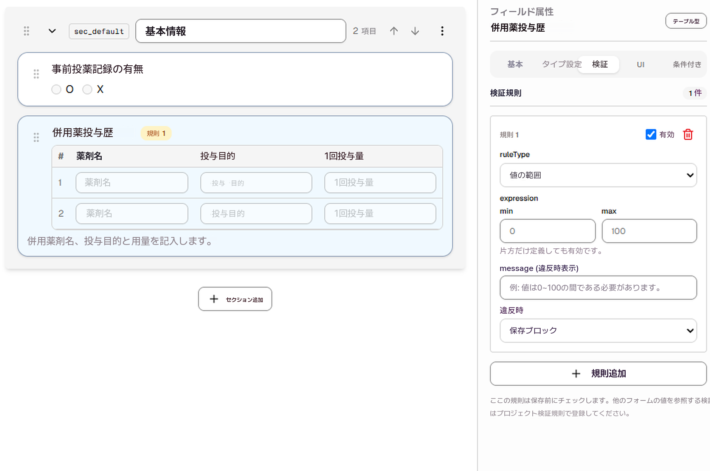
[+ 規則追加] — 規則をもう一つ作成します。(4.1 で選択したのと同じボタンです。)
キャンバスの表タイトルの横に「規則 1」バッジが表示されます。
規則数が 1 件 に変わります。
有効チェックボックスと削除アイコン — 規則を削除せずに一時的に停止できます。
ruleType — 規則の種類です。作成直後は「値の範囲」なので、必ず「他フィールドと比較」に変更してください。
min — 値の範囲を選んだときに表示される下限の欄です。
max — 同じ条件で表示される上限の欄です。
message (違反時表示) — 規則に違反したときに、ユーザーに表示する文言です。
違反時 — 保存ブロックまたは警告から選択します。(ruleType によっては選べなくなることもあります — 4.3)
薄い文字の 0 · 100 と「片方だけ定義しても有効です。」は値の範囲に関する案内であり、設定された値ではありません。
注意事項
必須確認 データ破損 · フォーム完了不可
- • ⛔「値の範囲」で行数を制限することはできません。min · max は行数ではなく値の大きさを見る欄であり、表の値は数値ではないので何も起こりません — エラーも出さないため、規則を設定したと思い込んだまま進んでしまいます。
- • ⛔「形式 (正規表現)」を表に設定しないでください — 保存が最後までブロックされます。正規表現は行の束全体を固定の内部文字列に変換してからチェックするため、どんな式を設定しても、行を一つでも入れた瞬間に違反となり、記録者がフォームを保存する方法がなくなります。
- • ⛔「小数桁数」も動作しません。1回投与量の小数点を制限したくても、このタブではカラムに届きません。4.1
- • message を空欄にすると、ユーザーはブロックされた理由が分かりません。必ず入力してください。
4.3規則作成完了 — 他フィールドと比較
概要
ruleType を他フィールドと比較に変更すると、同じフォームの他のフィールドの値と照らし合わせてチェックします。「事前投薬記録があると回答した場合にのみ表を受け付ける」のように、前の質問の回答によって表を受け付けるかどうかが分かれる関係を表現でき、表で正しく動作する唯一の規則です。比較対象は必ず表ではない他のフィールドでなければなりません — 下の注意事項を読んでください。
画面説明
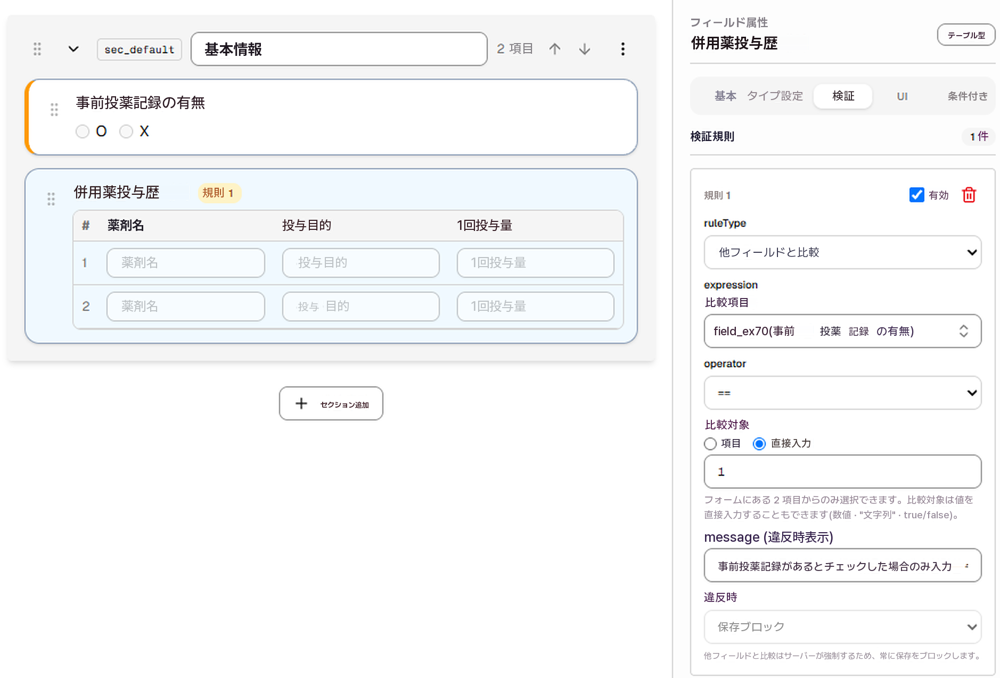
1 のときだけ保存されるように設定した状態ruleType = 他フィールドと比較 — 選択すると、下の欄が比較用に変わります。
比較項目 — 同じフォームの他のフィールドを選択します。キャプチャでは field_ex70(事前投薬記録の有無) で、表の前に置かれた単一選択フィールドです。⚠ ここで表自身を選んではいけません。
operator — 比較方法です。キャプチャでは ==(等しい) です。
比較対象 — 項目と直接入力から選択します。キャプチャでは直接入力で 1 を入れています — 「事前投薬記録の有無」の保存値です。
message (違反時表示) — キャプチャでは 事前投薬記録があるとチェックした場合のみ入力できます。 です。
違反時 — グレーで無効です。画面の案内のとおり「他フィールドと比較はサーバーが強制するため、常に保存をブロックします。」 — この規則では警告を選べず、保存ブロックに固定されます。
画面の案内 — 「フォームにある 2 項目からのみ選択できます。比較対象は値を直接入力することもできます(数値 · "文字列" · true/false)。」 この一覧には表自身も含まれているため、選ぶときに注意してください。
注意事項
必須確認 データ破損 · フォーム完了不可
- • ⛔ 比較項目として表自身を選ぶと、保存が永久にブロックされます。表の値は行の束なので
1と等しくなることは決してなく、行を一つでも入れた瞬間に違反となります。入力画面は最初から行 1 件で始まるため、記録者は手を付ける前にブロックされます。3.2 - • ⛔ 比較対象には画面の文言ではなく保存値を入れます。「事前投薬記録の有無」は画面に
O·Xと表示されるため、保存値が本当に1なのかを、そのフィールドの選択肢一覧で先に確認してください — 異なっていると、チェックしても保存がブロックされます。 - • 同じ関係を条件付き表示6.2でも作成できます。両方を設定すると、尋ねもしないのに保存もブロックする重複になるため、どちらか一方だけを使用してください — 表では条件付き表示のほうを推奨します。6.1
誤解しやすい動作
- • 6.2 のキャプチャとは参照キーの文字列が異なります。二つの画面を別のタイミングで撮影したため、自動付与されたキー(
field_ex70·field_8y7i)だけが変わったもので、指している項目はどちらも「事前投薬記録の有無」です。2.1
UIタブ — 画面配置と案内文
- 5.1UIタブの全体構成
- 5.2レイアウト幅
- 5.3読み取り専用 · 非表示
- 5.4placeholder · helpText
5.1全体構成
概要
値そのものではなく、画面にどう配置し、どう案内するかを決めるタブです。このタブの設定は、保存されるデータそのものを変更しません。テーブル型ではレイアウト幅が特に重要です — 表は横に広いため、幅を狭めると最初に崩れます。5.2
画面説明
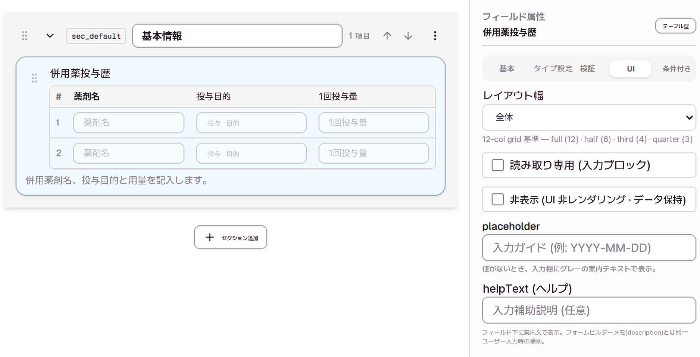
レイアウト幅 — フォームの1行の中でこの表が占める幅です。5.2
読み取り専用 (入力ブロック) — 表示はしますが、変更できないようにします。行追加 · 行削除ボタンも一緒に消えます。5.3
非表示 (UI 非レンダリング · データ保持) — 画面から隠します。表全体が消えます。5.3
placeholder — テーブル型では適用されません。セルの案内文にはカラム名がそのまま使われるため、ここで変更することはできません。5.4
helpText (ヘルプ) — 表の下に表示する案内文です。こちらは正常に動作します。5.4
タイプバッジ「テーブル型」
注意事項
必須確認 データ破損 · フォーム完了不可
- • ⛔ placeholder に入力しても画面は変わりません。セルに表示される「薬剤名」 · 「投与目的」 · 「1回投与量」はカラム名です — 変更するには、タイプ設定タブでカラムの label を修正してください。3.3 · 5.4
- • ⛔ 非表示は保存された行を削除しません。画面上で隠れるだけで、値はそのまま残り、抽出と監査証跡に含まれます。5.3
誤解しやすい動作
- • このタブの設定は保存された値を変えません。配置と案内だけが変わります。
参考
- • 読み取り専用と非表示を一緒に使用しないでください。非表示が優先して適用され、読み取り専用の設定は効果がありません。5.3
5.2レイアウト幅
概要
フォームの 1 行の中でこの表が占める幅を決めます。テーブル型は決められた幅をカラム数でさらに分けて使うため、幅を狭めると、他のどのタイプよりも早く読めなくなります。
画面説明
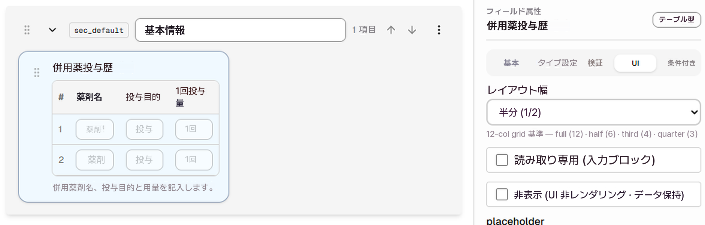
レイアウト幅 — 全体 · 半分 (1/2) · 1/3 · 1/4 から選択します。
表が半分の幅に縮んだことで、ヘッダー「1回投与量」が 2 行に折り返され、セルの案内文が 薬剤! · 投与 のように切れて、何の欄なのか分からなくなりました。カラムが三つしかないのにこうなります。
12-col grid 基準 — 画面の案内のとおり「full (12) · half (6) · third (4) · quarter (3)」です。表はこの幅をさらにカラム数で分けて使うため、体感の幅はずっと狭くなります。
注意事項
必須確認 データ破損 · フォーム完了不可
- • ⛔ テーブル型は必ず全体の幅にしてください。半分ですでにヘッダーが折り返され、セルの文言が切れます — 1/3 · 1/4 は表として使えないレベルになります。
- • ⛔ カラムが増えるほど早く崩れます。カラムを 5 個以上置く予定であれば、全体の幅でも狭くなることがあるため、本当に必要な列だけを置いてください。3.3
誤解しやすい動作
- • 切れたのは案内文だけで、欄の機能はそのままです。入力も保存も正常に動作し、狭く見えるだけです — だからこそ、より気付きにくくなります。
参考
- • 指定しない場合は全体の幅が適用されます。
5.3読み取り専用 · 非表示
概要
表を表示はするが変更できないようにしたり、画面から隠すが値は保持したりする設定です。どちらも保存された行を削除せず、表全体に適用されます — 特定のカラムだけをロックしたり隠したりする設定はありません。
画面説明
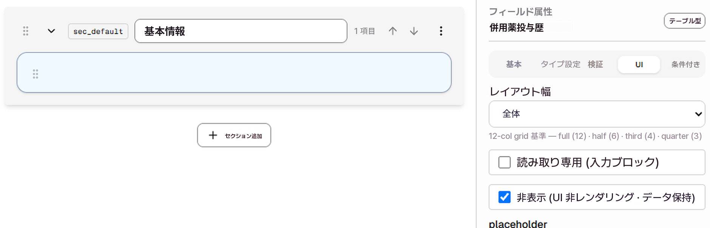
読み取り専用 (入力ブロック) — 選択すると、表は表示されますが記録者は修正できません。[行追加] ボタンと行削除アイコンも一緒に消えます。
非表示 (UI 非レンダリング · データ保持) — 選択すると、入力画面にこの表が表示されません。
キャンバスのカードに空の枠だけが残ります。タイトルも表もすべて表示されません。
レイアウト幅 — 5.2 で設定した値です。
注意事項
必須確認 データ破損 · フォーム完了不可
- • ⛔ 誤って入力された行を非表示で隠さないでください。値はそのまま残り、抽出と監査証跡に含まれます — 消すべき記録であれば、隠すのではなく、その行を削除する必要があります。4.3
- • ⛔ 読み取り専用にすると、記録者は行を追加できません。他のタイプでは「閲覧のみ可能」程度の意味ですが、表では記録そのものができなくなります — 他の場所から取り込んだ資料を表示するときだけ使用してください。
誤解しやすい動作
- • 条件によって隠す場合は、条件付き表示を使用してください。このタブの非表示は常に隠す設定です。6章
参考
- • 非表示と読み取り専用を一緒に選択すると、非表示が優先して適用されます。
5.4placeholder · helpText
概要
入力欄の中と下に入る案内文を決めます。テーブル型では二つの項目の明暗が分かれます — helpText は正常に動作しますが、placeholder は適用されません。キャプチャがその証拠です。
画面説明
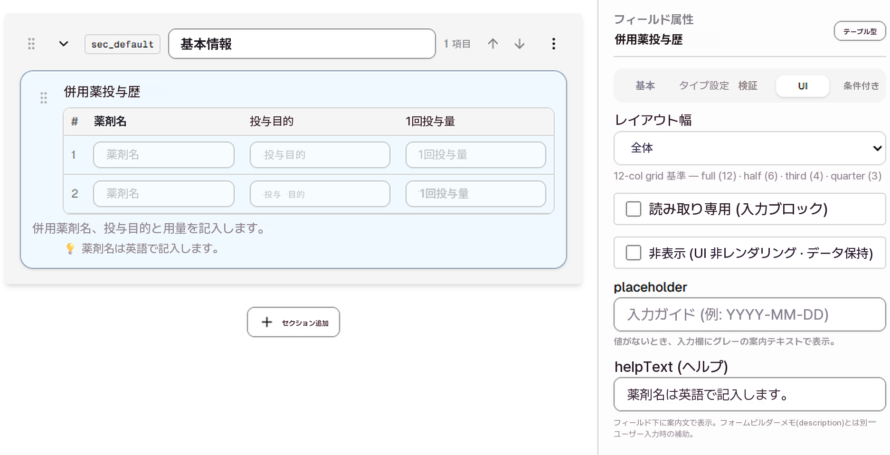
placeholder — 値がないときに入力欄に表示する薄い文字です。キャプチャでは空欄で、案内文「入力ガイド (例: YYYY-MM-DD)」だけが表示されています。
それでも表のセルには「薬剤名」 · 「投与目的」 · 「1回投与量」がすでに表示されています。この文言は placeholder ではなく、カラム名(label)がそのまま使われたもので、変更するにはタイプ設定タブでカラムの label を修正する必要があります。3.3
helpText (ヘルプ) — 表の下に表示する案内文です。キャプチャでは「薬剤名は英語で記入します。」です。
表の下に 💡 アイコンと一緒に表示されます。こちらは正常に動作します。
description (ヘルプ) — 2.1 で入力した文言です。helpText とは別の項目で、アイコンなしで上の行に表示されます。
注意事項
必須確認 データ破損 · フォーム完了不可
- • ⛔ placeholder に書いた文言はどこにも表示されません。セルの案内はカラム名なので、この欄では変更できません — ここに書いておくと、設定したつもりの案内が記録者に届きません。5.1
- • カラム別の案内はカラム名に含めてください。単位や形式が重要な場合は、
1回投与量(mg)のように名前そのものに書くのが、表で使える唯一の方法です。3.3
誤解しやすい動作
- • 表全体に関する案内は helpText に記入してください。キャプチャのように「薬剤名は英語で記入します。」と書くと、表記の揺れを減らせます — 検証では強制できないため4.1 · 4.2、この文言が事実上唯一の制御手段です。
- • description と helpText は一緒に表示されます。両方を入力すると 2 行になるため、同じ内容を二度書かないでください。2.1
条件付きタブ — 他の値に応じて表示する
- 6.1条件付き表示の有効化
- 6.2条件の設定
6.1条件付き表示の有効化
概要
他のフィールドの値に応じてこの表を表示したり隠したりする機能です。テーブル型に特によく合う機能です — 表には「該当なし」を示す欄がないため2.1、前の質問の回答で最初から尋ねないことが最もすっきりした解決策です。
画面説明
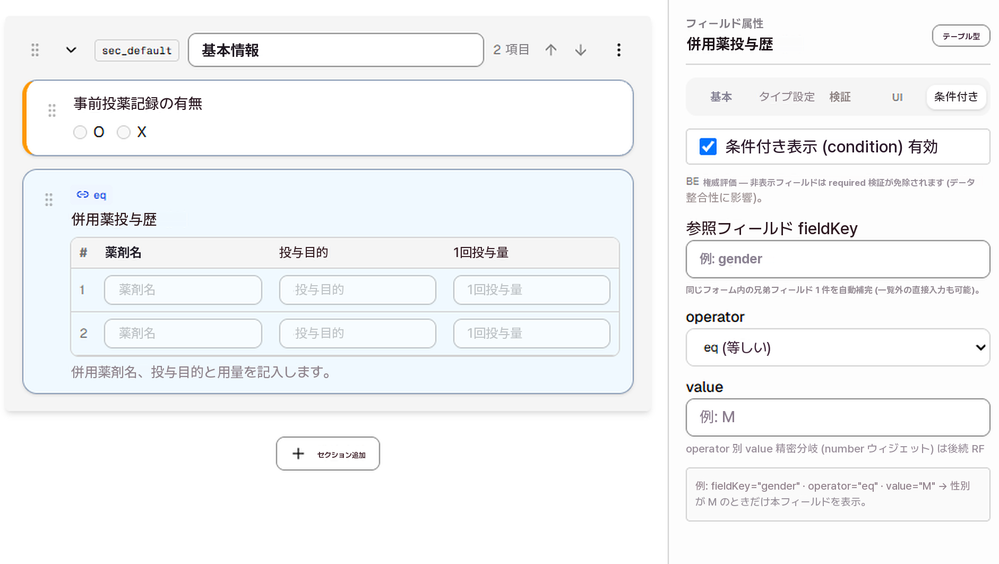
条件付き表示 (condition) 有効 — 選択すると、下の条件設定が表示されます。
キャンバスの表の上に 🔗 eq バッジが表示され、条件が適用されたことを示します。
参照フィールド fieldKey — 条件の基準となる、同じフォーム内の他のフィールドです。同じフォームの兄弟フィールドが自動補完され、一覧にない値を直接入力することもできます。
operator — 比較方法です。デフォルト値はeq (等しい)です。
value — 比較する値です。参照フィールドの保存値を入力します。6.2
⚠ 画面の案内 — 「非表示フィールドは required 検証が免除されます (データ整合性に影響)。」 条件の判定はシステムが実行します。
下部の例 — fieldKey="gender" · operator="eq" · value="M" → 性別が M のときだけ本フィールドを表示。
注意事項
必須確認 データ破損 · フォーム完了不可
- • ⛔ 条件を設定すると必須検証が免除されます。条件が合わずに隠れている間は、表が必須であっても、また必須カラムがあっても、空の状態でフォームが完了します。2.2
- • ⛔ すでに行を入力した後に条件が偽になると、表が画面から消えます。行はそのまま残るため、前の質問の回答を後から変更した場合は、残っている行を別に削除する必要があります。5.3
誤解しやすい動作
- • 表には「なし」を記入する欄がありません。前にはい/いいえの質問を置いてこの表を条件で結ぶと、該当しない被験者には表が表示されないため、空の表と未記入を区別できます。2.1 · 2.2
参考
- • 条件を有効にして参照フィールドを空欄にすると、条件は成立しません。必ず②~④をすべて入力してください。6.2
6.2条件の設定
概要
6.1 で有効にした条件を最後まで入力した状態です。この設定では、「事前投薬記録の有無」フィールドの値が 1 のときだけ表が画面に表示されます。4.3 の検証規則と同じ関係を別の方法で表現したものです — 保存をブロックする代わりに最初から尋ねない方法です。二つの画面を並べて比較してみてください。
画面説明
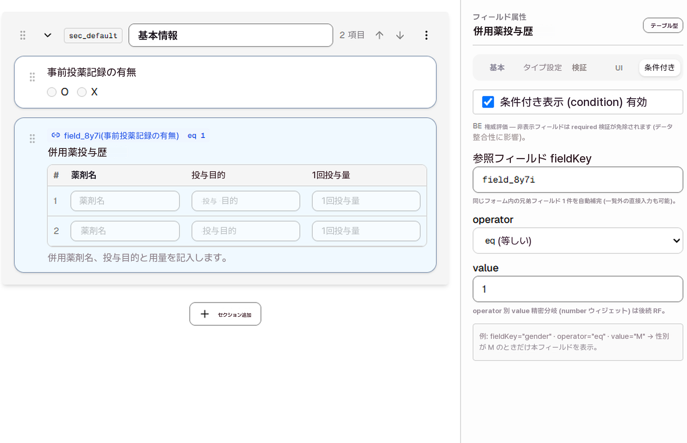
事前投薬記録の有無 が 1 のときだけ表示されるように設定した状態参照フィールド fieldKey = field_8y7i — 同じフォームの「事前投薬記録の有無」フィールドを指します。検証規則4.3と同じフィールドを指していますが、キャプチャを撮影したタイミングが異なるため、自動付与されたキーの文字列だけが異なります。4.3
①~③をすべて入力した結果 — キャンバスのバッジが 🔗 field_8y7i(事前投薬記録の有無) eq 1 と具体的になります。
operator = eq (等しい)
value = 1 — 画面に表示される O ではなく、その選択肢の保存値を入力します。
⚠ 画面の案内 — 「非表示フィールドは required 検証が免除されます (データ整合性に影響)。」
下部の例 — fieldKey="gender" · operator="eq" · value="M" → 性別が M のときだけ本フィールドを表示。
注意事項
必須確認 データ破損 · フォーム完了不可
- • ⛔ value には画面の文言ではなく保存値を入力します。「事前投薬記録の有無」が画面に
O·Xと表示されるからといってOと書くと、条件が成立せず、表は最後まで表示されません。参照するフィールドの選択肢一覧で、先に保存値を確認してください。 - • ⛔ 参照フィールドの保存値を変更すると、条件が気づかないうちに壊れます。保存値を
1からYに変更すると、この条件はエラーもなくただ成立しなくなります — そのため、発行後の保存値の変更は危険です。 - • 同じ関係を検証規則4.3でも作成できます。両方を設定すると、尋ねもしないのに保存もブロックする重複になるため、どちらか一方だけを使用してください — 表では条件付き表示のほうを推奨します。6.1
誤解しやすい動作
- • 設定した後はプレビューで確認してください。基準の値を変えながら、表が実際に表示されたり消えたりするかを確認する必要があります。
付録
- 7.1タブ別の設定項目一覧
- 7.2必ず覚えておくこと · 扱っていないもの
7.1タブ別の設定項目一覧
タブ別の設定項目
| タブ | 項目 | 何を決めるか | 本文 |
|---|---|---|---|
| 基本 | fieldKey | 表全体が保存される一つのキー (保存後の変更禁止) | 2.1 |
| label (表示名) | 表の上に表示されるタイトル — カラム名とは別の階層 | 2.1 | |
| description (ヘルプ) | 表の下の補足説明 — 「一件もないとき」を記入すること | 2.1 | |
| 必須入力 | 行が最低 1 件必要かどうか — ⚠ カラムの必須のほうが強い | 2.2 | |
| SDV検証対象 | CRA の原資料照合の対象かどうか — 抜けている行を見つける唯一の段階 | 2.3 | |
| タイプ設定 | カラム fieldKey | その列の保存キー — 発行前に確定すること | 3.3 |
| カラム label | 表のヘッダー兼セルの案内文 (placeholder の代わりになる) | 3.3 · 5.4 | |
| カラムタイプ | その列の入力方式 — 9 種 (数値は必ず数値に) | 3.2 · 3.3 | |
| カラム必須 | ⚠ 行ごとにその欄が埋まっているかチェックされる | 3.3 | |
| 検証 | ruleType | 「他フィールドと比較」だけが動作する | 4.2 · 4.3 |
| 形式 (正規表現) | ⛔ 設定すると保存が最後までブロックされる — 使用禁止 | 4.2 | |
| 値の範囲 · 小数桁数 | ⛔ 黙って何もしない — 行数の制限ではない | 4.2 | |
| 比較項目 | ⛔ 表自身を選ぶと保存が永久にブロックされる | 4.3 | |
| UI | レイアウト幅 | ⚠ 必ず全体 — 半分ですでにヘッダーが折り返される | 5.2 |
| 読み取り専用 | 表示はするが修正できないように — 行追加ボタンも消える | 5.3 | |
| 非表示 | 画面に非表示 — 保存された行はそのまま残る | 5.3 | |
| placeholder · helpText | ⛔ placeholder は適用されない · helpText のみ動作 | 5.4 | |
| 条件付き | 条件の有効化 | 条件付き表示を使用するかどうか (必須検証の免除) | 6.1 |
| 参照フィールド fieldKey | 条件の基準となる、同じフォームのフィールド | 6.2 | |
| operator · value | 比較方法と比較する値 (保存値を入力) | 6.2 |
必須が二つの階層にある — どちらがどう作用するか
| 設定 | どこで | 何をチェックするか | オフにするとスキップできるか |
|---|---|---|---|
| 表全体の必須 | 基本タブ「必須入力」2.2 | 行が最低 1 件あるか | はい — カラムの必須が一つもないときだけ |
| カラム必須 | タイプ設定タブのカラム「必須」3.3 | 行ごとにその欄が埋まっているか | いいえ — 表全体の必須をオフにしても、表が集計の対象になる |
7.2必ず覚えておくこと · 扱っていないもの
必ず覚えておくこと
必須確認 データ破損 · フォーム完了不可
- • 検証タブの「比較項目」で表自身を選ばないでください。一覧に一緒に表示されますが、選ぶと行を一つでも入れた瞬間に違反となり、保存が永久にブロックされます。4.3
- • 「形式 (正規表現)」も設定しないでください。同じ理由で、何を入力しても違反になります。4.2
- • カラムに必須が一つでもあれば、表全体の必須をオフにしてもスキップできません。さらに、行ごとにその欄が埋まっているかまでチェックします — 空の行は削除してください。2.2 · 3.3
- • レイアウト幅は全体にしてください。半分ですでにヘッダーが 2 行に折り返され、セルの文言が切れます。5.2
- • カラムを定義しないと、何も入力できません。キャンバスに表が表示されなければ、その状態です。1.1 · 3.1
- • placeholder に書いた文言はどこにも表示されません。セルの案内はカラム名なので、カラムの label を修正してください。3.3 · 5.4
- • 数値のカラムは必ず数値タイプにしてください。テキストで受け付けると単位が混ざり、集計も比較もできません。3.3
誤解しやすい動作
- • キャンバスの 2 行はプレビューです。実際の入力画面は 1 行から始まり、記録者が [行追加] で増やします。3.2
- • 「該当なし」を記入する欄がありません。前にはい/いいえの質問を置き、条件付き表示で結ぶのが標準的な解決方法です。2.1 · 6.1
- • セル一つ一つをチェックする規則はありません。カラムで制御できるのはタイプと必須だけです。4.1
参考
- • 読み取り専用にすると、行追加ボタンが消えます。表では「閲覧のみ可能」ではなく、記録そのものができなくなります。5.3
この文書で扱っていないもの
※ 未測定宣言を許可 — 基本タブに項目そのものが表示されません。表は値が複数件あるため、「確認できない」を一件として宣言することが成り立たないからです。そのため、このマニュアルには未測定の節がありません。該当しない場合は条件付き表示で処理してください。1.1 · 6.1
AE意味ロール — 基本タブに項目そのものが表示されません。有害事象のロールははい/いいえまたは単一選択フィールドに指定するもので、表には指定できません。1.1
最小 · 最大行数 — 指定する項目はありません。行の削除には、最後の 1 行が残るとそれ以上削除できないという制約だけがあります。行数の基準が必要な場合は、ヘルプで案内し、SDV で確認してください。3.1
デフォルト値 (defaultValue) — タイプ設定タブに項目がありません。表は値が複数件あるため、事前に埋めておく手段が提供されていません。3.1
自動計算 (calculation) — タイプ設定タブに項目がありません。表全体を一つの数値として算出することは成り立ちません。合計が必要な場合は、別の数値フィールドを設けてください。3.1
カラムを参照する検証 · 条件 — カラムの fieldKey は表の中でのみ有効なため、他のフィールドの検証規則や条件付き表示から直接参照することはできません。3.2 · 4.1
プロジェクト検証規則での参照 — 他のフォームの値を見る「プロジェクト検証規則」画面では、テーブル型フィールドを参照対象として選べません。値が行の束なので、セル単位のパスにまだ対応していないためです。4.1
カラムとして使えないタイプ — 複数行テキスト · ファイルアップロード · 住所 · 尺度、そして表 · グループのようなコンテナすべて。一つのセルに収まらないため、一覧から除外されています。3.2